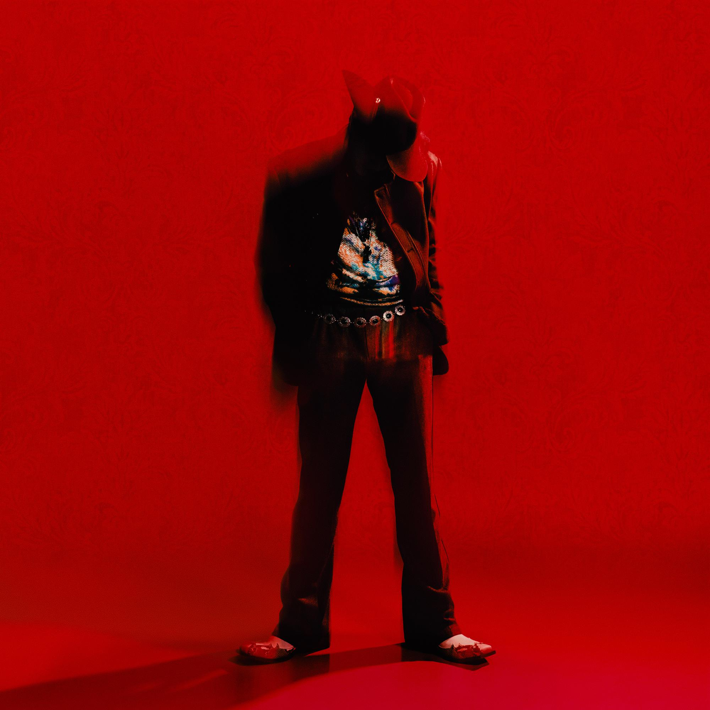

Moodswings in to Order
- 1.Seraph
- 2. 1 Shot
- 3. Mood
- 4. Miss Understood
- 5. Avalon
- 6. Merry Go
- 7. Ribbon
- 8. Winterfall
- 9. Calico
- 10. MR Insanity
- 11. Ballroom Extravaganza
- 12. Sometime I'm

DPR IAN


Moodswings in to Order is a continuation of the "Mito" character that appeared on Moodswings in This Order.[2] Mito is Mr. Insanity's "first and purest creation — perhaps even the closest replica of him". He "craves Mr. Insanity's love to a possessive degree, to the point where sharing his affection is an insult. His greed, however, gets him cast out of Mr. Insanity's world and into despair."